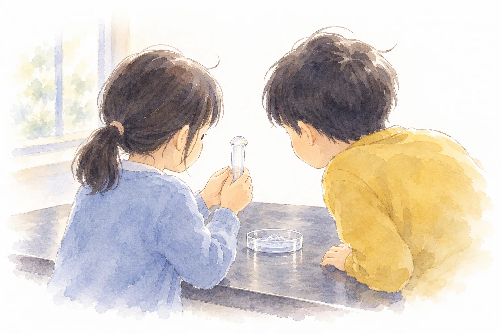

4年 理科 授業者用
Volume and temperature
空気、水、金属の順に、あたためたり冷やしたりしたときの体積の変化を、子どもが予想して実験で確かめる9時間です。前の次で得た結論から次の問いが生まれるように組んでいます。各時間のページに、ねらい・発問・実験・板書・資料と、電子黒板に映す問いをまとめました。
9時間 本時は第7時

Grade 4 — Science / Volume and temperature
つながる3つの問い（着眼１）
第１次の終わり（第4時）に身の回りの物を分け、形のない物と形のある物を比べて、調べる順番を子どもが決めます。
Nine lessons
| 時 | 次・段階 | 学習活動 |
|---|---|---|
| 第1時 | 第１次 見いだす・つかむ・見通す | 手でにぎると ・せっけん水の膜を張った試験管を手でにぎり、気づきや疑問を出し合って問題をつくる。 ・前単元の学習や生活経験を基に予想し、理由を書く。 ・湯と氷水で調べる方法を考える。 |
| 第2時 | 第１次 調べる | 空気をあたためると ・湯と氷水で空気をあたためたり冷やしたりして、体積の変化を調べる。（実験１） |
| 第3時 | 第１次 まとめる | 空気のまとめ ・実験結果を基に、空気の体積と温度の関係について妥当な考えをつくりだす。 |
| 第4時 | 第１次 生かす | 変わりそう？変わらなそう？ ・身の回りの物を、体積が変わりそうな物と変わらなそうな物に分け、調べる順番を決める。 |
| 第5時 | 第２次 見いだす・つかむ・見通す・調べる | 水をあたためると ・分類で意見が分かれた水を取り上げ、空気と同じ器具に水を入れた物を見て問題をつくる。 ・空気の結果や前単元の学習を根拠に予想し、理由を書く。 ・空気と同じ手順で計画を立てる。 ・湯と氷水で水をあたためたり冷やしたりして、体積の変化を調べる。（実験２） |
| 第6時 | 第２次 まとめる・生かす | 水のまとめ ・結果を空気のときと比べながら考察し、水の体積と温度の関係をまとめる。 ・分類表に水の結果を書き込み、形のある物について話し合う。 |
| 第7時 本時 | 第３次 見いだす・つかむ・見通す | 金ぞくは？ ・学びの足跡と分類表をふり返り、金ぞくの玉にさわって、考えのちがいから問題をつくる。 ・予想と理由を書いて、ひとりで書く、となりの人に言う、班で話す、の順に話し合い、見直す。 ・輪を知り、玉と輪を使った実験の方法を考え、結果を見通す。 |
| 第8時 | 第３次 調べる | 金ぞくをあたためると ・湯であたためて調べる。 ・炎で熱したり、冷やしたりして調べる。（実験３） |
| 第9時 | 第３次 まとめる・生かす | 3つをくらべる ・結果を空気や水と比べ、増え方のちがいも合わせてまとめる。 ・今回の単元で学んだことが、日常生活の中でどのように生かされているのかを考える。 |
学習活動は指導案の着眼１の表より。第◯次の中での時間の割りふりは案です。
Goals
| 知識及び技能 | 〇 金属、水及び空気は、あたためたり冷やしたりすると体積が変わるが、その程度に違いがあることを理解している。 〇 器具を正しく扱いながら調べ、結果を分かりやすく記録している。 |
|---|---|
| 思考力判断力表現力等 | 〇 体積と温度との関係について、既習の内容や生活経験を基に、根拠のある予想や仮説を発想し、表現している。 〇 実験の結果を基に考察し、表現している。 |
| 学びに向かう力人間性等 | 〇 事物・現象に進んで関わり、他者と関わりながら問題解決しようとしている。 〇 学んだことを学習や生活に生かそうとしている。 |
Phenomena
| 次 | ねらい | 事象提示 |
|---|---|---|
| １次 空気 | 〇 全員が自分の手でにぎって、膜がふくらむ事象に出会えるようにする。 〇 前単元「とじこめた空気や水」の既習と結び付けて、温度と体積をつなぐ予想を引き出す。 | 〇 試験管の口にせっけん水の膜を張り、手でにぎる体験活動をさせる。 （児童の姿）にぎっただけでシャボン玉みたいにふくらんだ。なんで？ （児童の姿）空気を入れていないのに、どうして？ 中の何が変わったの？ |
| ２次 水 | 〇 第１次の分類で意見が分かれた水へ向かわせる。 〇 空気の結果や前単元の学習を根拠に予想させ、増え方のちがいにも目を向けさせる。 | 〇 空気と同じ器具で、中身を水に変えて調べる。水面はわずかしか上がらない。 （児童の姿）水は前の学習でおし縮められなかったから、あたためても変わらないと思う。 （児童の姿）少しだけど水面が上がった。空気より増え方が小さいのかな。 |
| ３次 金属 本時 | 〇 第１次の分類表で、形のない物（空気・水）と形のある物（金属）を比べさせ、「形のある金ぞくも、あたためると体積が変わるのか」という問題をもたせる。 〇 予想と理由を伝え合う中で、児童どうしの考えのずれに気づかせる。目の前の事象でゆさぶるのは次時とし、湯であたためても玉が通る結果から、あたため方を見直させる。 | 〇 第１次の分類表を再提示し、形のない物と形のある物を比べる。「理科室で見つけた道具」として金属膨張試験器の玉だけを班に一つずつ配り、さわらせる。輪は、予想を話し合ったあとで見せる。 （児童の姿）空気も水も大きくなったから、金ぞくも大きくなると思う。 （児童の姿）水はあまり大きくならなかった。かたい金ぞくは、もっと変わらないと思う。 （児童の姿）友だちとわたしの考えがちがう。どっちが正しいのか確かめたい。 |
Preparation
器具の構成は東京書籍「新しい理科」令和6年度の観察・実験器具材料一覧に合わせています。寸法はメーカーの公開資料で確かめました。
Files
第4時。黒板用。1まい100×140mm。
第4時から第7時まで、黒板やかべで見返す。
カードを電子黒板の上で列へ動かせる。
子どもが前に立って予想や結果を説明するときに、指さす先と話し方の型を用意しておくためのものです。特別支援教育の文献にもとづいて作り直した2回目です。5〜6人の班で使えるようにしています。書画カメラでノートを映すときにも使えます。
問題、予想、理由、結果、分かったことなど11まい。番号と形（1 問題 ■、2 予想 ●、3 結果 ▲、4 まとめ ◆、5 次へ ★）がついていて、色だけに頼らずに見分けられます。
黒板の上のはしに1から5を並べ、今の段階の上に「いまここ」を貼ります。
「わたしの予想は（ ）です」など10本。全文、書き出しだけ、見出しだけ、なしの順に外していきます。「予想が正しければ」はえらんで使う型です。
書き出しつきと線だけの2種類から、子どもがえらびます。ラミネートしてマーカーで書きます。
A4を半分に折って立てます。表は話し合いの順番、裏は司会のことばと、全員が話したかのしるしです。
表は「にている」、裏は「ちがう」。A4に8まいです。両面に刷って切ります。
ノートや白い紙を書画カメラで映すときに、横に置きます。
上に流れと「いまここ」があります。書体はBIZ UDゴシックです。
ロイロノートに読みこむときは、こちらを使います。
視覚支援の根拠（学習指導要領解説、教育支援の手引、色覚の資料、海外の研究）と、出す量、外す順番、班での使い方をまとめています。